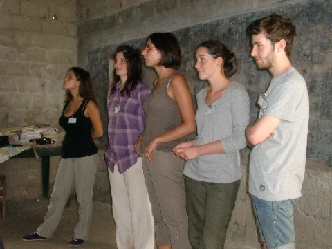

Wir suchen motivierte junge Menschen, die Deutsch im Ausland unterrichten und Erfahrungen im Unterrichten von Kindern oder Erwachsenen sammeln möchten.
Wir freuen uns, dass der erste Teil unserer "Rising International Bilingual School - RIBS" endlich für Kinder und Erwachsene in Bertoua geöffnet wurde! Die Schule und das Ausbildungszentrum werden der Bevölkerung qualitativ hochwertige, kostengünstige Schulungen und angemessene sanitäre Anlagen anbieten. Derzeit suchen wir Freiwillige, die sich für Folgendes interessieren:
Im Rahmen unseres Projekts wollen wir an unserer Schule Deutsch unterrichten. Aufgrund der begrenzten Anzahl von Deutschlehrer*innen im Umfeld der Schule suchen wir Freiwillige, die uns dabei unterstützen.
Wenn Du sich für unser Programm entscheidest, kannst Du neben Deutsch auch beim Rahmenunterricht wie zum Beispiel Sport, Kunst oder Sport, zur Hand gehen und helfen.

Bei der Konzeption Deines Unterrichts hast Du freie Hand. Wir wünschen uns einen interaktiven und spielerischen Unterricht, da Deutsch keine Pflicht ist und die Schüler*innen wenig bis gar keine Deutschkenntnisse aufweisen.
Hast Du Erfahrung im Unterrichten von Sprachen bzw. Fremdsprachen oder in der Ausbildung von erwachsenen? Möchtest Du Deine Fähigkeiten einsetzen, um die Bildungsstandards zu verbessern? Bist Du daran interessiert neue großartige kulturelle Erfahrungen zu machen und Deine Kultur bzw. die deutsche Kultur Kindern und Erwachsenen als Lehrer*in näherzubringen? Wenn Du bereit bist, die Zukunft zu verändern, bewerbe Dich hier!
Das Schuljahr beginnt am 5. Oktober und geht biszum 31. Juli 2021. Wir erwarten nicht, dass Du für die gesamte Dauer bleibst, suchen jedoch immer nach Freiwilligen für das ganze Schuljahr.
Freiwillige können auch an unserem Ferienschulprogramm teilnehmen, das während der Sommerferien stattfindet.
Wir warten auf Dich, dass Du Teil unser großen Familie wirst!